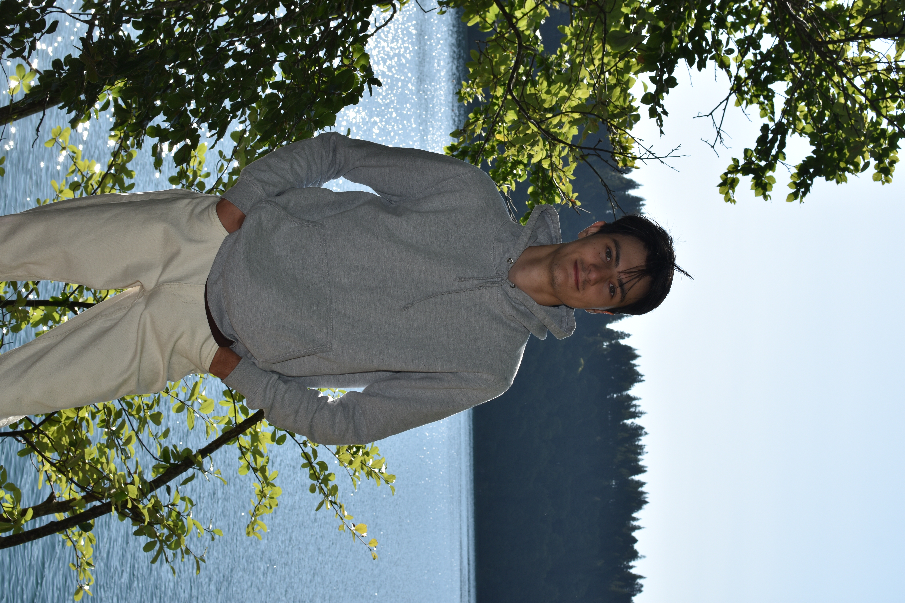

Mathys Dussel
Master's Student in Ecological Systems Modeling
Passionate about ecology, I combine field naturalism and theoretical ecology (biostatistics, community modeling) to analyze the dynamics of ecosystems and communities.

Master's Student in Ecological Systems Modeling
Passionate about ecology, I combine field naturalism and theoretical ecology (biostatistics, community modeling) to analyze the dynamics of ecosystems and communities.